Dark Gateway OS の使い方
初回起動時のTor接続設定、ネットワークアダプタ構成、多階層プロキシ連携、きめ細かなファイアウォール制御、内蔵ツールの活用法を網羅した詳細ガイドです。
ステップ 1：初回起動とTorゲートウェイ接続 (Boot Isolation)
データ漏洩を防ぐため、起動時は通信が完全停止（DisableNetwork 1）しています。Tor Connection Setup ウィンドウでダイレクト接続または WebTunnel / obfs4 ブリッジを指定し、[Connect] をクリックしてください。
- • Direct Tor: Torネットワークへの直接接続（検閲のない通常のネットワーク環境向け）。
- • Configure custom bridge:
webtunnelやobfs4などのHTTPSブリッジを使用して厳しいDPI検閲を突破。
ステップ 2：ネットワークアダプタの構成 (Network GUI)
ショートカット Cmd+n で外部 WAN eth0 (DHCP/固定IP) および内部 LAN eth1 ゲートウェイ (10.152.152.10, DHCP内蔵) を設定します。
10.152.152.10、サブネットマスク 255.255.192.0、接続端末へIPを配布する内蔵DHCPプール。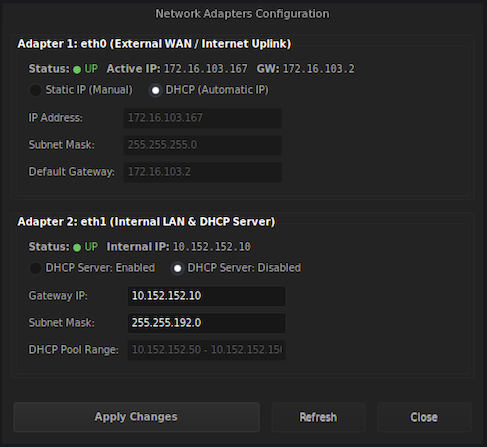
ネットワークアダプタ設定ツール (Cmd+n)ステップ 3：多階層プロキシ連携 (Proxy Setup Wizard)
Proxy Wizard (Cmd+p) で vless:// Reality や ss:// Shadowsocks の接続リンクをインポートし、高速な専用出口ノードを設定します。
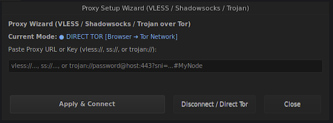
プロキシ設定ウィザード Proxy Wizard (Cmd+p)ステップ 4：きめ細かなファイアウォール (Firewall Control Center)
Cmd+f で8つの独立した nftables モジュールを制御し、Chromium、Telegram、システム更新の通信許可/切断や緊急 Killswitch を操作します。
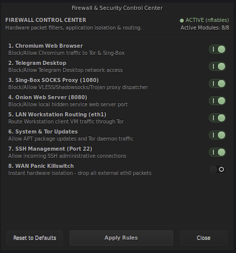
ファイアウォール＆セキュリティ管理センター (Cmd+f)ステップ 5：プライベートなウェブ閲覧と安全な通信
Chromium は SOCKS5 127.0.0.1:1080 経由で設定済みで、WebRTC/DNS リークはゼロです。Telegram は専用の隔離グループで常時プロキシ接続されます。
🌐 Ungoogled Chromium
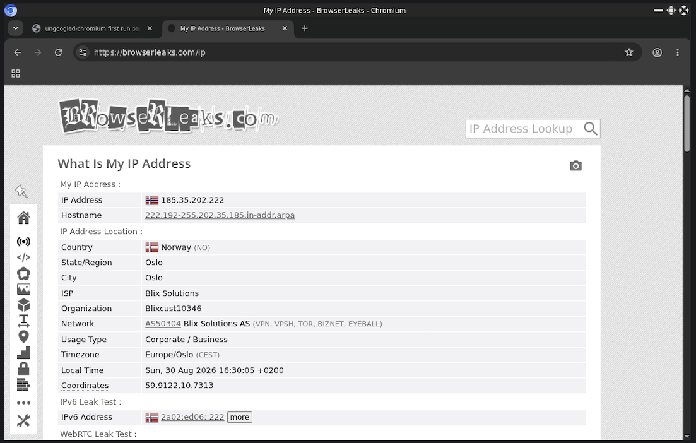
BrowserLeaks 診断：DNS/WebRTC リーク 0件、出口IPは完全に匿名化。💬 Telegram Desktop
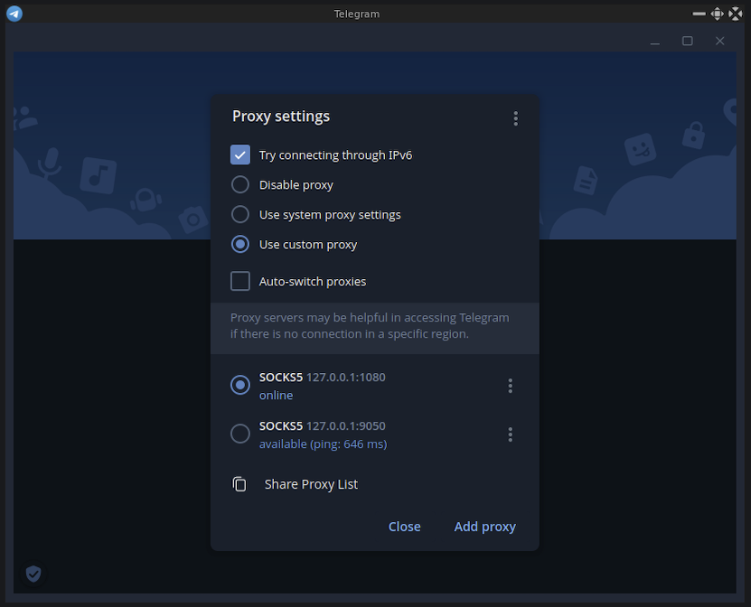
事前構成された永続 SOCKS5 プロキシプロファイル：オンライン接続中。ステップ 6：セッション痕跡の完全消去 (Wipe Privacy Traces)
ショートカット Cmd+Shift+k を押すだけで、ブラウザ履歴、Cookie、Telegram のセッション、Bash 履歴を瞬時に消去します（シャットダウン時にも自動実行）。
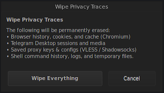
痕跡消去ツール Wipe Privacy Traces (Cmd+Shift+k)ステップ 7：安全なシステム更新 (Update Manager)
AwesomeWM の設定バックアップと health-check 診断を自動実行しながら、Debian と Tor のセキュリティパッケージを安全にアップデートします。
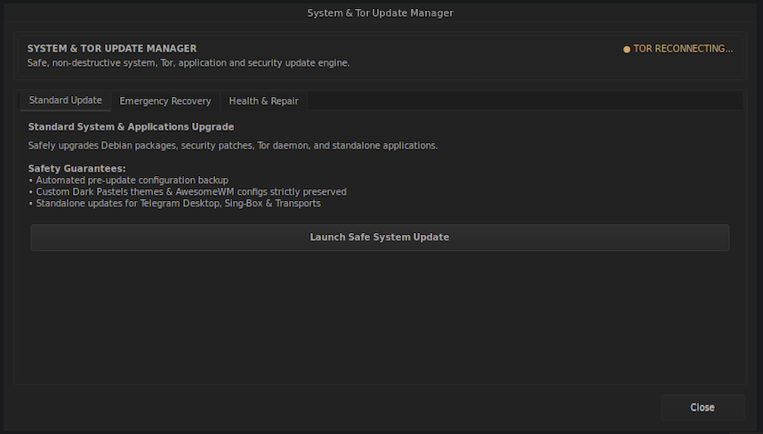
システム更新マネージャステップ 8：システムモニタリングと内蔵ツール群
Conky リアルタイム HUD、Nyx Tor モニタ (Cmd+m)、Midnight Commander、Bash ターミナル、Mousepad テキストエディタ、音量調整ツールを完備。
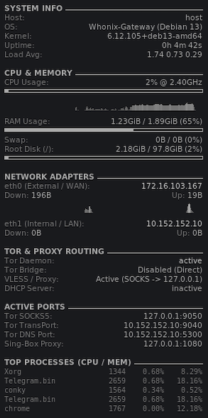
Conky リアルタイム HUD
サイドバーHUD：CPU/メモリ負荷、eth0/eth1 帯域幅、待機ポートを常時表示。
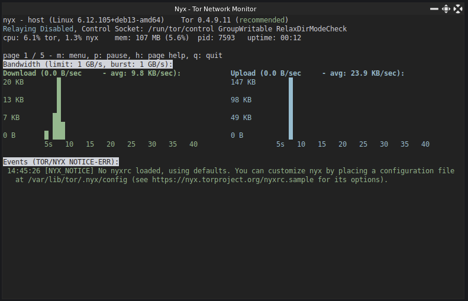
Nyx — Tor ネットワークモニタ
リアルタイム帯域幅グラフとサーキット閲覧機能を備えた Tor 監視ツール (Cmd+m)。
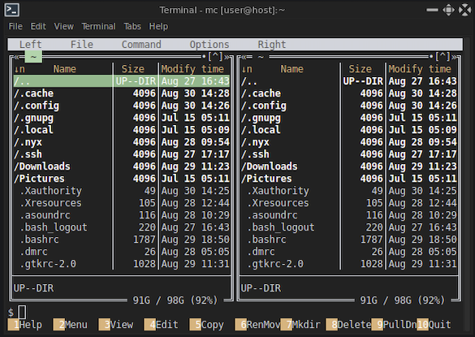
Midnight Commander (mc)
Dark Pastels カラーを採用した定番の2画面ファイルマネージャ。
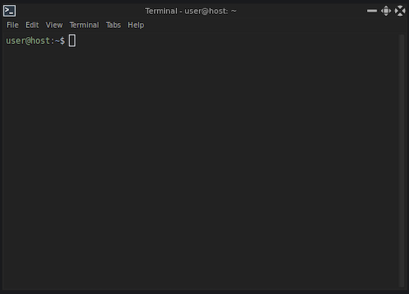
Terminal ターミナルコンソール
デスクトップショートカットとシームレスに連携する軽量 Bash ターミナル。
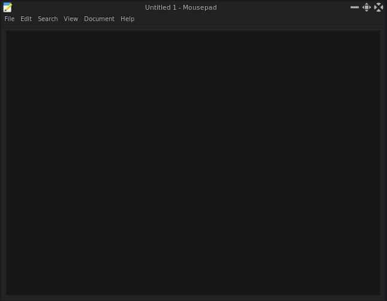
Mousepad テキストエディタ
設定ファイルや秘密鍵の編集に適した軽量・高速な GTK3 エディタ。
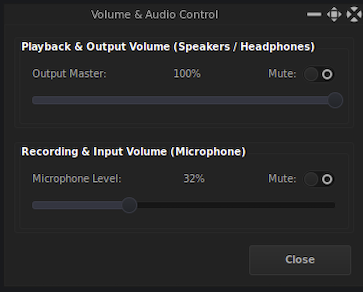
音量・オーディオコントロール
音量およびマイク感度を素早く調整できるネイティブ C/GTK3 ウィジェット。